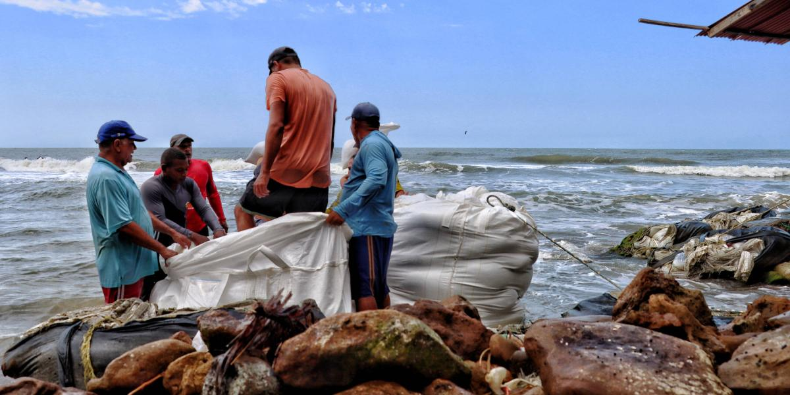
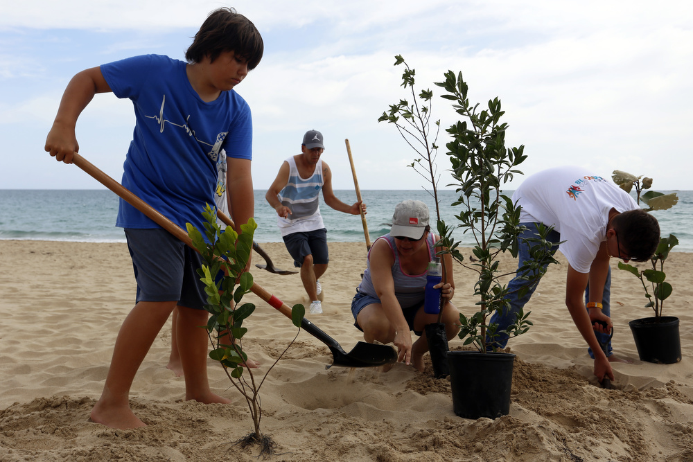

Soluciones para mitigar la Erosión Costera
No existen soluciones permanentes para la Erosión Costera, ya que es un proceso natural. Pero hay varias maneras de mitigar sus efectos en nuestras costas y sus comunidades. Es importante llevar estas a cabo antes de causar daño permanente a nuestras playas, cuales son una gran parte de nuestra identidad en Puerto Rico.
Entender el problema
| A pesar de ser un problema grave en Puerto Rico, no todos saben sobre los efectos de la Erosión Costera. Es importante de entender y consciente de sus efectos en nuestra isla. En concienciar más puertorriqueños sobre este problema, podemos prioritizar y hacer un esfuerzo conjunto de su mitigación. |  |
Reforzar nuestras playas
| Una solución contemplada para mitigar la erosión es reforzar las playas. Reponiendo la arena perdida, creando un sistema de duna, incrementando la vegetación costera y protegiendo nuestros arrecifes corales puede restaurar las condiciones previas en donde la Erosión Costera no era un problema tan significo. |  |
Construcción de Diques y otras estructuras
| Un dique se refiere a una construcción que evita el paso de agua. Con rocas o rompeolas, se puede reducir el impacto del agua en cualquier superficie. Este método funciona mejor en áreas de mayor densidad popular, para proteger la infraestructura de los edificios que podrán ser afectados. | 
|